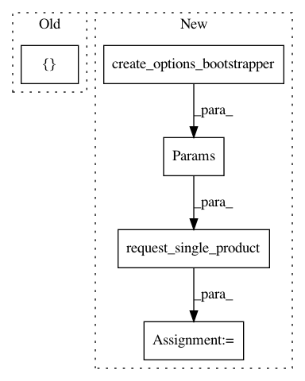

1a00c522e29c3f1040ad6bfe615b57d17af0658e,src/python/pants/engine/internals/graph_test.py,TestSpecsToAddresses,test_filesystem_specs_glob,#TestSpecsToAddresses#,371
Before Change
result = self.request_single_product(
AddressesWithOrigins,
Params(
FilesystemSpecs([FilesystemGlobSpec("demo/*.txt")]), create_options_bootstrapper()
),
)
expected_origin = FilesystemResolvedGlobSpec(
After Change
// If a glob and a literal spec both resolve to the same file, the literal spec should be
// used as it"s more precise.
literal_spec = FilesystemLiteralSpec("demo/f1.txt")
result = self.request_single_product(
AddressesWithOrigins,
Params(FilesystemSpecs([spec, literal_spec]), create_options_bootstrapper()),
)
assert result == AddressesWithOrigins(
[
AddressWithOrigin(
Address("demo", relative_file_path="f1.txt", target_name="demo"),
In pattern: SUPERPATTERN
Frequency: 3
Non-data size: 5
Instances
Project Name: pantsbuild/pants
Commit Name: 1a00c522e29c3f1040ad6bfe615b57d17af0658e
Time: 2020-08-04
Author: 14852634+Eric-Arellano@users.noreply.github.com
File Name: src/python/pants/engine/internals/graph_test.py
Class Name: TestSpecsToAddresses
Method Name: test_filesystem_specs_glob
Project Name: pantsbuild/pants
Commit Name: 07a3ac8be168f626c92f2c066f9000ea969a11a0
Time: 2020-06-24
Author: 14852634+Eric-Arellano@users.noreply.github.com
File Name: src/python/pants/backend/python/rules/python_sources_test.py
Class Name: UnstrippedPythonSourcesTest
Method Name: test_filters_out_irrelevant_targets
Project Name: pantsbuild/pants
Commit Name: 07a3ac8be168f626c92f2c066f9000ea969a11a0
Time: 2020-06-24
Author: 14852634+Eric-Arellano@users.noreply.github.com
File Name: src/python/pants/backend/python/rules/python_sources_test.py
Class Name: StrippedPythonSourcesTest
Method Name: test_filters_out_irrelevant_targets